Индустрия
Инженер xAI подал иск из-за увольнения после сигналов о безопасности Grok
Бывший инженер xAI подал иск, обвиняя компанию в игнорировании безопасности Grok и увольнении за whistleblowing.
TechCrunch AI
11 июн. 2026 г.Бизнес-новости об искусственном интеллекте: продукты, партнёрства, рыночные тренды и релизы компаний со всего мира.
305 материалов
Бывший инженер xAI подал иск, обвиняя компанию в игнорировании безопасности Grok и увольнении за whistleblowing.

Amazon привлёк $17,5 млрд банковского кредита для ИИ-инфраструктуры — ещё $14 млрд через облигации.

OpenAI может взять 10 ГВт в Огайо, а Nvidia — подкрепить сделку своим балансом.

Jedify хочет стать слоем бизнес-контекста для ИИ-агентов: $24 млн и партнёрство со Snowflake.

Oasis 3 от Decart генерирует дорожные миры часами, но пока теряет физику и связность сцены.

Федеральный судья в Миссисипи оштрафовала всех юристов в деле за использование ИИ и отменила процесс.

Илон Маск презентовал спутник AI1: орбитальные дата-центры с чипами Nvidia и мощностью 150 кВт

«Алиса» записала PIN-код карты и выдала его по хитрому запросу — тест первых наушников «Яндекса»

Первые наушники «Яндекса» с «Алисой» — что умеет ИИ-ассистент в ухе и чего пока не может
Как поручить ИИ составление промпта для изображения и получить лучший результат без лишних хлопот
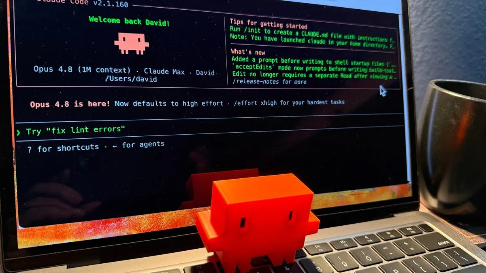
Claude Opus 4.8 оказался честнее предшественника, но не прошел тест на юридическую достоверность.

Китай закрывает ИИ-таланты внутри страны — что стоит за новыми правилами и делом Manus
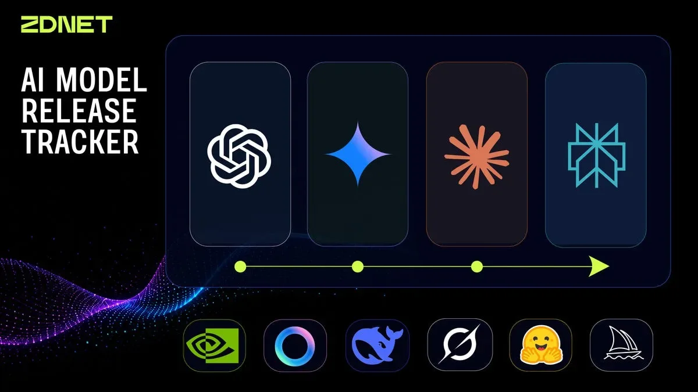
Anthropic: Opus 4.8 втрое дешевле быстрых режимов и безопаснее предшественника

Гендиректор Standard Chartered назвал увольняемых «менее ценным капиталом» — и пожалел об этом
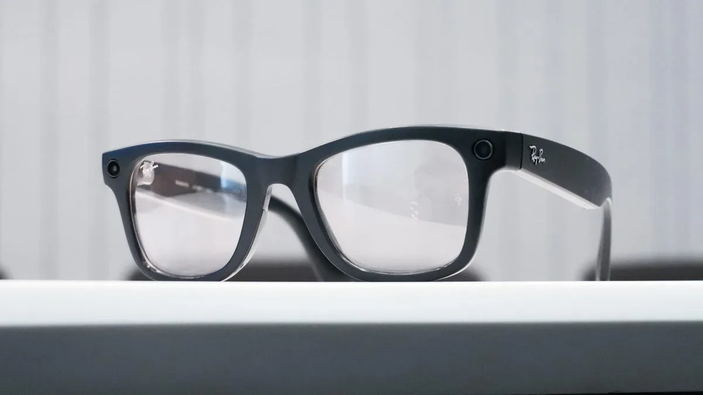
Meta Ray-Ban со скидкой до 25%: чем отличаются поколения и стоит ли брать первое

Семь гаджетов, которые журналист ZDNet использует каждый день — с ценами и личными впечатлениями
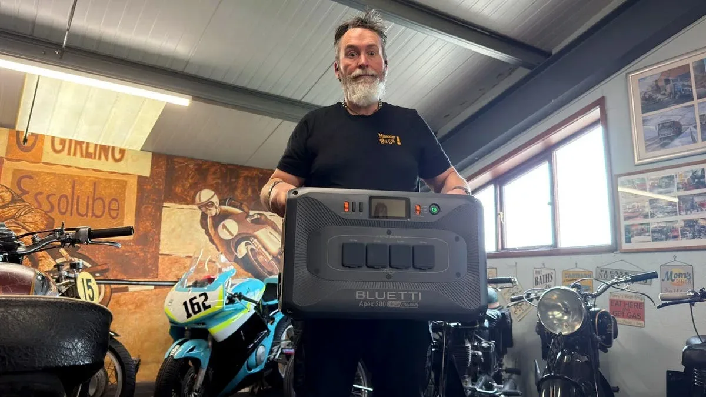
Солнечные панели, накопители и тарифы TOU: как не остаться без света летом и сэкономить на электричестве
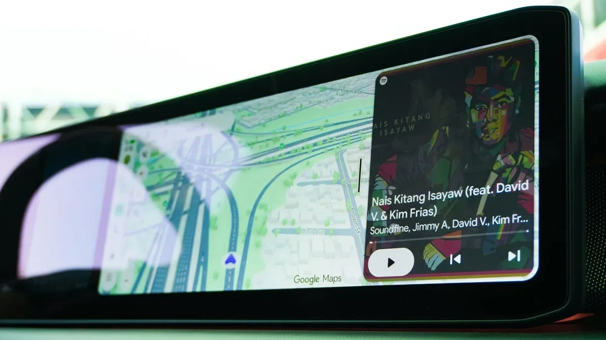
Google показала Android Auto с Gemini: виджеты, 3D-карты и голосовое управление авто
96% ИТ-специалистов работают с ИИ, но только половина — постоянно. Главные преграды — объяснение результатов руководству и нехватка аналитических навыков.
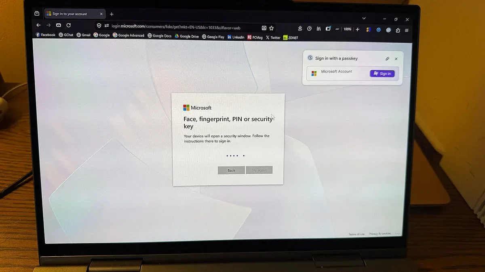
Microsoft убирает SMS-коды входа — что придёт на замену и как это настроить

Карманный Linux-компьютер с ИИ-ускорителем от создателей Flipper Zero — что умеет Flipper One
Google дала журналисту полную свободу с Android XR-очками — результат пугает конкурентов
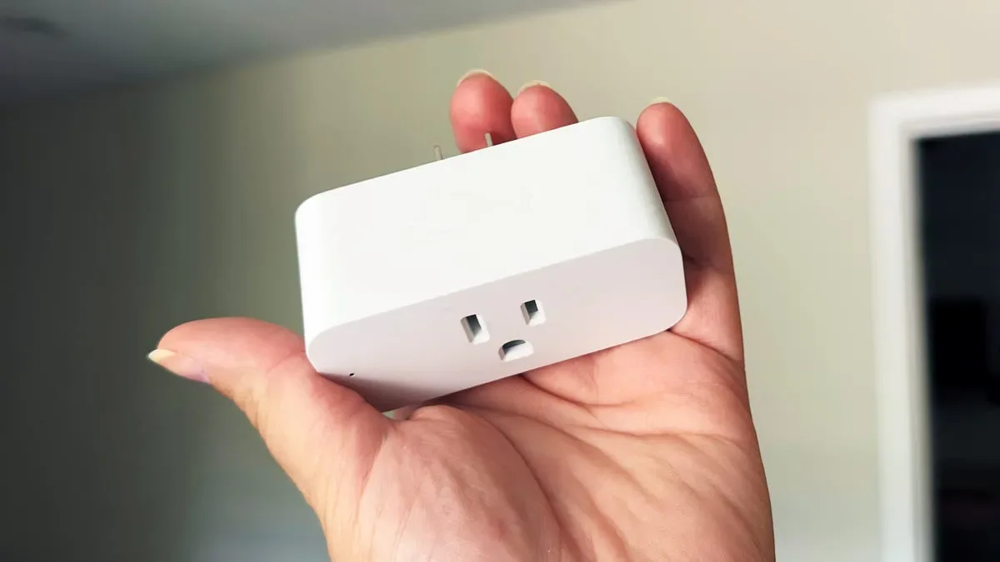
13 долларов за зарядку, 8 за чистоту экрана: что редакция ZDNet покупает снова и снова
Verizon: SMS и звонки опаснее email — фишинг через мобильные каналы бьёт рекорды кликабельности
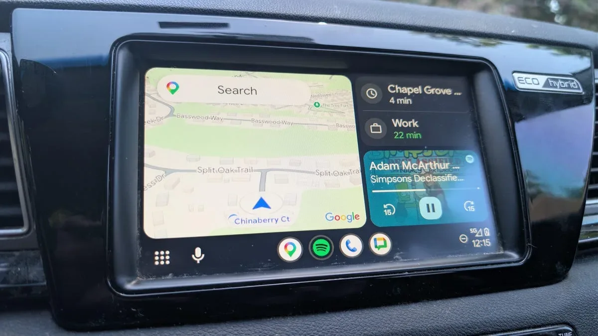
Четыре настройки Android Auto, которые делают каждую поездку безопаснее
Firefox против Chrome: почему открытый код и независимость важны для приватности в эпоху ИИ
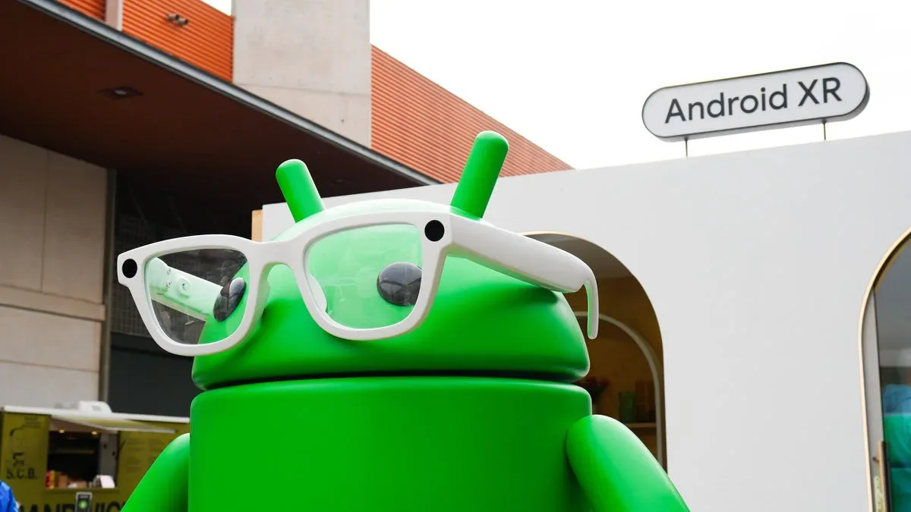
Google I/O 2026: Gemini Intelligence, Googlebook и Android 17 — все ключевые анонсы первого дня конференции.
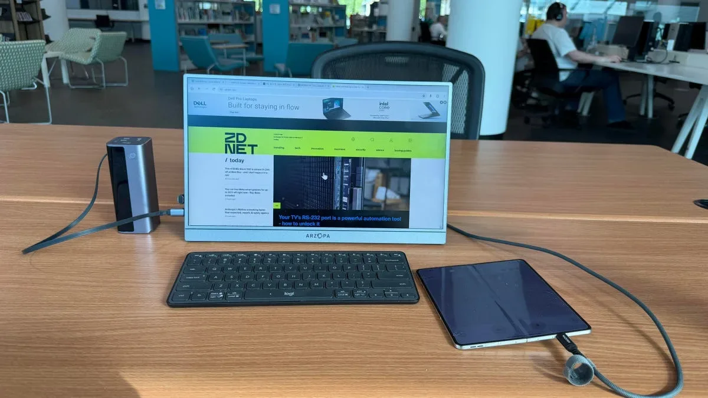
Razr Fold + монитор + клавиатура: насколько это реально заменяет ноутбук

Meta увольняет 8000 и одновременно переводит 7000 в ИИ — что происходит внутри компании
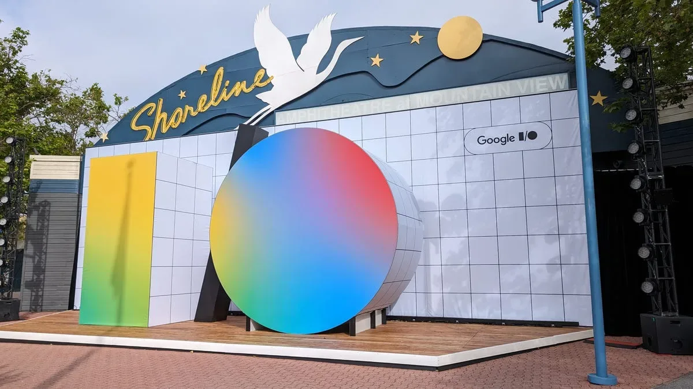
Google I/O 2026: Android 17, Gemini Intelligence и умные очки — главные анонсы